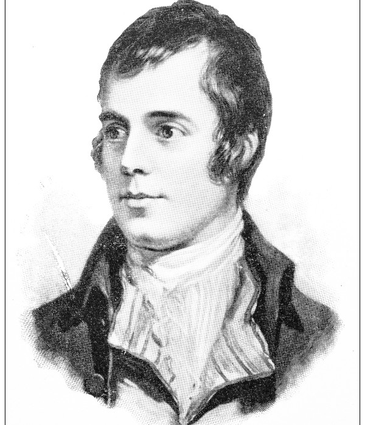

Huntsville Lodge No. 364 is a Lodge of Free and Accepted Masons located at Huntsville Arkansas
Our Lodge's physical address is:
300 Main Street, Huntsville Arkansas
(across the street from the Madison County Court House.)
Our stated Communications are held on the 2nd and 4th Tuesdays each month,
Dinner is served beginning at 6:00 P.M. Lodge opens at 7:00 P.M.
Non-Masons are always welcome to visit us and have dinner with the brethren between 6:00 P.M. and 6:45 P.M.
Calendar of Events at Huntsville Lodge No. 364
December 27, 2024 - Festival of St. John the Evangelist
Installation of Officers - Jointly with Little Springs Lodge No. 230
Dinner at 6:00 p.m. with installation at 7:00 p.m.
This will be a closed installation, Masons only
R.W. Sumner Brashears as Installing Officer
W. Austin Campbell, as Marshall
Bro. & Rev. Dan Wooley, as Chaplain
2025 Officers of Huntsville Lodge No. 364
January 14, 2025 - Stated Communication
Cooks for January are Jason and Lee Holt
Dinner at 6:00 p.m., communication at 7:00 p.m.
January 21, 2025 - Little Spring Lodge No. 230
Dinner at 6:00 p.m., communication at 7:00 p.m.
Officers of Little Spring Lodge for 2025
Don A. Pinkley, Worshipful Master
Don C. Carter, Senior Warden
Dan Wooley, Junior Warden
R:.W:. Rodney A. Fry, PM, Secretary
Frankie Fitch, PM, Treasurer
James F. Cornlison, Senior Deacon
Richard Guraedy, PM, Junior Deacon
Jimmy Couch, PM Chaplain
R:.W:. Elmer L. Moore, PM Tyler
James Anderson, PM, Master of Ceremony
Jason Holt, PM, Master of Ceremony
January 25, 2025 (Saturday) -
Scottish Rite Valley of Fayetteville
The Valley will be hosting a
Burns Night Dinner at Washington Lodge
No. 1 beginning at 5:00 p.m.

The Evening's Program will include
Piper
Address to the Haggis
Traditional Dinner
Entertainment
Tickets are $75 per person. Dress is suit and tie for men, cocktail dress for ladies.
This is a fundraiser for "Rite Care" - Helping children communicate.
Email your RSVP by January 15th to Clint Chastain -
chastain.tclint@gmail.com
Worshipful Master Josh Peden made the following appointments during the January 14th stated communiction:
Audit committee for the 2024 books: Jim Couch, Will Anderson, and Sumner Brashears.
Facilities and grounds committee: Brett Hall, Don Carter, Jim Couch, and Jon Williams.
Cooks and dining room management:
January: Jason Holt and Lee Holt;
February: Trent Harrison and Jim Couch;
March: Don Pinkley and Don Carter;
April: Michael Foster and Brett Hall;